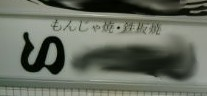

（378）もんじゃ焼き
|
もんじゃ焼きは関西発祥の食べ物と思っていたが、ウイキペデァによれば関東＝東京発祥らしい。語源は「焼くときにタネで文字を書いて遊んだことから“文字焼き”と呼ばれ、これが「もんじゃ焼き」となったとの説が有力とか。
高校生の頃、友人が「昨日は帰りに“ じゃき屋 ”へ寄った」などと言うのを聞いて、（なんで、お好み焼き屋のことをじゃき屋なんて言うんだろう...）と思った。10年以上も経ってから、（そうか、もんじゃき屋の略だったのか）と謎が判明 （^-^；
いずれにしてもナゴヤ地方ではなじみが薄いので、“もんじゃ焼き”を表看板にしている店もほとんどない。また もんじゃ焼き店の看板などをみると、なんだか お好み焼きの出来損ないみたいな感じで 食べたいと思うこともなかった。
先日、家族で某お好み焼き店に行ったところ、メニューに “もんじゃ焼き” があったので 話のタネに注文してみた。目の前で作られるのを見ていると、やっぱり お好み焼きの出来損ないを作っているみたい(>_<) できあがった
ものも、やっぱり 生焼けの お好み焼きみたいで σ(-_-)の お好みじゃなかった....m(_ _)m
|
なーだ 投稿日：2012/09/03(Mon)
愛環新豊田駅近くの高架下にもんじゃ焼きの
お店があります。結構人気があって、美味しいです。
…どうでもいい話ですが(^_^;)
|
あさみ 投稿日：2012/09/03(Mon)
ふみふみ...
なにせ、σ(-_-)の行った店で出たもんじゃ焼きが、イメージ通りのモノだったので(^-^；
数年前、σ(-_-)の住んでいるド田舎市（ナゴヤの北の方にあるイナカ市）に もんじゃ焼きを看板メニューにした店がオープン。
（おぉ もんじゃ焼き店か、そのうち行ってみようか....）などと思っているうちに閉店（゜0゜）
いまじゃ焼き鳥店(^-^；
|
あさみ 投稿日：2012/09/27(Thu)
ちと用事があって大都会ナゴヤへ出かけた。
そしたら或る飲食店ビルでもんじゃ焼き店を見かけた。
おお、ナゴヤにもあったのか(^-^；

|